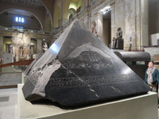 |
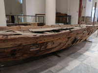 |
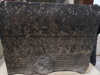 |
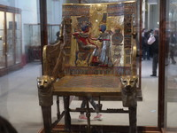 |
| a top stone of pyramid | a solar boat | a stone coffin | a pharaoh's chear |
The first day, we were on the plane all day long. The second day, we could land at Cairo airport after long flight, about 15 hours. As soon as we arrived at downtown, we had lunch on a boat restaurant beside the Nile river. Then we visited the museum.
"The Museum of Egyptian Antiquities, known commonly as the Egyptian Museum or Museum of Cairo, in Cairo. It has 120,000 items, with a representative amount on display, the remainder in storerooms."
5000 years ago, it was believed that kings would come back form the dead without fail. When his soul came back, he would need his body for it. That is why they made their mummies.
This fine big stone was on a top of pyramid, I heard.
In pyramids many wooden solar boats were discovered. Because it was thought that a dead king come back on the solar boat.
Please look at this stone coffin which has a lot of characters and pictures on all sides even the top. How do you think what is written on that?
What is a beautiful chair this is! I can not believe it was a chair made for the pharaoh far thousands of years ago.
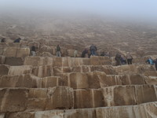 | 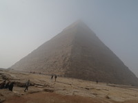 | 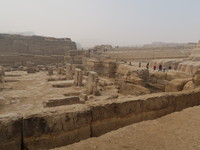 | 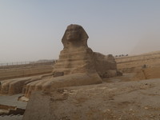 |
| closing | exterrior view | Ruin of Temple | Sphinx |
We stayed at the hotel near the famous three major pyramids of Giza on Day 2 and Day3. After breakfast we arrived soon, early in the morning, at Pyramid of Khufu called Great Pyramid of Giza, 146m tall. Unfortunately it was covered with gas, so we could not see the whole pyramid but could see only the part. Then we entered its interior. Bending over, we walked a narrow tunnel with a width of 1 m and a height of 1.3 m more than 100 m and arrived in a room with a coffin. On the way I hit on the head at rock ceiling some times. Next we moved to The Pyramid of Khafre, 143m tall, and looked around Sphinx and the ruins of the temple in front of the pyramid.
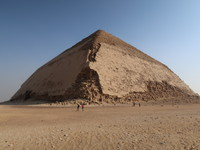 | 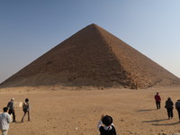 | 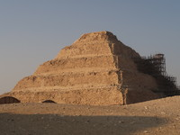 | 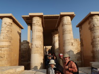 |
| Bent Pyramid | Red Pyramid | Step Pyramid | Temple of Step Pyramid |
Afternoon, I took part in optional tour for three pyramids.
Bent Pyramid for father of pharaoh Khufu, 105m tall, was changed the height on the way to build. So it looks bent.
Pharaoh Sneferu, Khufu's father, built Red Pyramid which used granite looked red.
The earliest Egyptian pyramid was Step Pyramids, 62m tall of 6 steps.
These pyramids with temples including Giza pyramids were built approximately 4600 years ago.
After dinner at the hotel I joined another optional tour, Sound and Light Pyramids Show for about 1 hour.
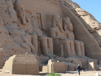 | 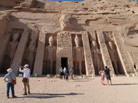 | 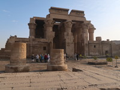 | 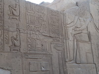 |
| Abu Simbel Great Temple | Abu Simbel small temple | Temple of Kom Ombo | one of reliefes |
Day 4, early in the morning we headed for Aswan by an airplane. Then we started Aswan High Dam sightseeing. Next place we visited was The Abu Simbel temples that are two massive rock temples. They were built by Ramesses II about 3200 years ago, the big one was for himself and small one was for his lovely wife Nefertari. Original temples were moved 200m on the hill to avoid sinking to the bottom of Aswan dam. At the inside of temples we could see a lot of valuable paintings, sculpture and statues. In the evening we got on a cruise ship at Aswan.
Day 5, in the morning we got off the ship at Kom Ombo and went to Temple of Kom Ombo on foot. It was built 2300 years ago and have left marvelous columns, walls and ceilings with reliefs and pictures. One of reliefs shows treatment tools and medical stories.
After that we rode on the ship.
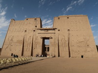 | 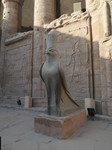 | 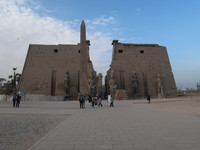 | 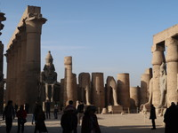 |
| Temple of Horus | the inside | Luxor Temple | the inside |
Cruising the river, we had lunch on the ship. Then the ship stopped at Edfu and we went to Temple of Horus by a horse-drawn carriage making good atmosphere of the old age. Temple of Horus, 137m tall, was built in about B. C. 60 by father of Cleopatra. Horus is a symbol of this temple, known as the Great Temples keeping good condition. No sooner than we return to the ship again, the ship left for Luxor.
Day 6, at first we visited Luxor Temple that was built about 3300 years ago. Next we went to Amun Temple which is part of The Karnak Temple Complex, 1km2 big enough. Both Luxor Temple and Karnak Temple were being connected by 3km approach called Sphinx approach in old days. You can imagine at that time a lot of sphinx was being lined up, but now only about 10 m both of sides of the approach of Sphinx have been left. Then we came back to the ship to have lunch.
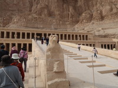 | 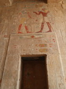 | 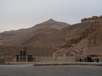 | 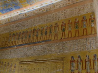 |
| Mortuary Temple of Hatshepsut | colorful relewf | the view of the valley | a painting of Ramses IV Tomb |
Luxor west bank is famous for Valley of the Kings. Mortuary Temple of Hatshepsut was built about 2500 years ago by Hatshepsut who is the first woman pharaoh. It located in behind Valley of the Kings and looks very modern like a recent building. The inside was full of beautiful pictures, sculpture and statues that praised Hatshepsut.
Valley of the Kings, where 64 kings tombs has been discovered, was made during the most prospered era called New Kingdom of Egypt, BC 1570 to BC 1070.
We visited 4 tombs, Rameses 4, Tutankhamun, Rameses 3, and Rameses 9. We could enter the interior of each tomb through the corridor of which the wall and the ceiling were full of colorful and skillful reliefs.
I was strongly excited at them because it was unbelievable they were made 2500 years ago. Under controlled other civilization, the temple and their culture were broke down and the hieroglyph reliefs were completely forgot, so it was not able to understand whether it is design, symbol or letter.
Now scientists have found it to be letters like alphabet expressed praising the king with his historical story and their custom. What the great work they are! I got a strong impression again and again.
On the ship at night I had a experience of Panama Canal system, because the Nile river has big distance in the level on some part, our ship was lifted 9m.
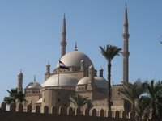 | 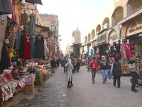 | 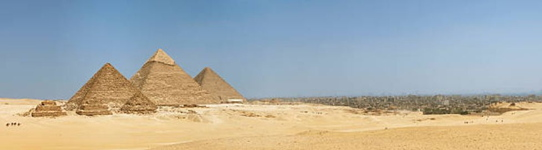 |
| Mohammed Ali Mosque | Han Khalili Bazaar | pyramids of Giza |
Early in the morning we left Luxor for Cairo by an airplane.
After arriving we headed for Mohammed Ali Mosque. There we only looked at the exterior view. I heard it is the copy of Blue Mosque in Turkey, but it was less beautiful than Blue Mosque. Han Khalili Bazaar had so many shops and stalls that it was a busy town , but it didn't attract us.
I just bought very reasonable 20g of saffron made in Iran for 1050 yen, doubting whether it was fake.
Finally I add the picture of the three major pyramids of Giza. As my surprise, pyramids are very close to town, although they have stood on desert. The big pyramids are Khufu's, Khafre's and Menkaure's, and the three small pyramids are their wive's.
It was rather cold for temperature. It may be due to drying. Many clothes I brought didn't fit the weather.
I appreciate the water in Japan. Because in Egypt I couldn't eat fresh vegetables and couldn't use tap water for mouthwash.
On the other hands, dishes in Egypt were delicious although none around me expected them.
For keeping safty the police stayed in most tourist spots and also occasionally got on our bus.
During our trip, I was annoyed with the matter of money. To use toilet outside I needed 2 Egypt pounds, 12 yen, every times, and other tips for some services.
At sightseeing spots Egyptian were shouting at "1 dollar, 1 dollar" with loud voice. Our guide said, "Please listen to that as a greeting for you."
Egypt has rich history and the ancient Egypt was glorying, but now it is only one of poor countries. Ancient Egypt left brilliant legacies and made a large quantity of lazy robbers.
I touched the abundant civilization and culture there and I was really excited at them. Thanks to the great Ancient Egypt, I enjoyed this trip.
{kind=link}
{kind=link}
{kind=link}
{kind=link}
{kind=link}
{kind=link}
{kind=link}
{kind=link}
{kind=link}
{kind=link}
{kind=link}
{kind=link}
{kind=link}
{kind=link}
{kind=link}
{kind=link}
{kind=link}
{kind=link}
{kind=link}
{kind=link}
{kind=link}
{kind=link}
{kind=link}
{kind=link}
{kind=link}
{kind=link}
{kind=link}